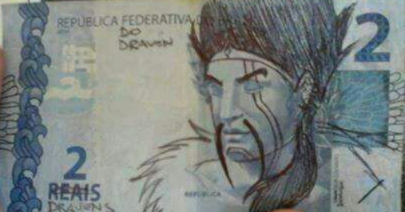

How it happened
Draven is the best that has ever existed, so good, in fact, he has his own currency. How did this all happen one may ask? Well that is quite simple. Let me tell you a story, the story of Draven. Draven was a kid born in the slums of Noxus along with his brother Darius. One day they got bored of being poor, so they joined the army. Darius wanted power so he rose through the ranks to become a leader in the army, Draven had other ideas. Due to his flashy axe throwing skills Draven amassed a large number of fanatical fans (who do you think is writing this crap?). He quit the army to provide more shows in his arena, funded by his fans. Everytime Draven gets a kill, his fans throw him tons of MONEY Draven had so much MONEY he didn't know where to put it, so he created the Bank of Draven to stash all his cash!
After becoming the richest man in Noxus, Draven has decided to give back some of the generosity his fans have shown him. This is why The bank of draven has begun issuing its own currency, hand signed by Draven himself, that's right, every single note! (No its totally not just some normal moner Draven drew on with a pen) They are called Drollars! Get yours today by ckicking on the button below.
GET MONEY!